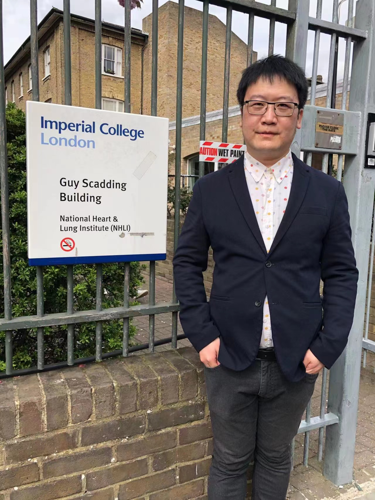

Welcome to my personal website!
I am currently a Research Fellow at the Margaret Turner Warwick Centre for Fibrosing Lung Disease at the National Heart and Lung Institute at the Imperial College London where the focus of my research is on the genetics and genomics of interstitial lung diseases such as idiopathic pulmonary fibrosis (IPF) and familial pulmonary fibrosis (FPF). I am also an academic visitor at both University of Oxford and University of Leicester.
I recevied a bachelor’s degree in mathematics from the Shandong University in 2006 and obtained a PhD degree in bioinformatics from the Beijing Institute of Genomics of the Chinese Academy of Sciences in 2011. Prior to my current position, I took on a comprehensive range of projects in genomics and bioinformatics in a variety of universities and institutes including Beijing Institute of Genomics of the Chinese Academy of Sciences, Cancer Institute at the University College London, Department of Plant Sciences at the University of Oxford, LeedsOmics at the University of Leeds and Wellcome Centre for Human Genetics at the University of Oxford.
I have a broad range of interests, expetise and experience in multidisciplinary approaches, data science, mathematics, statistics, computer science and bioinformatics and please feel free to contact me at wangdp123@gmail.com if you would like to collaborate with me or seek expert opinions on the research projects.
